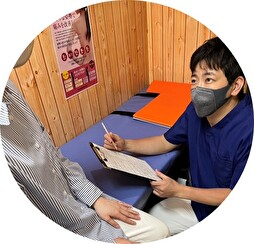
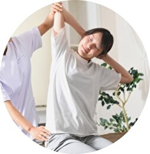

初めての方へ
01 受付
保険証を窓口へお出しください。
問診表をお渡しするので記入をお願いします。(不明な点は未記入でかまいません。)
02 問診
問診表をご記入いただいた後、負傷部位と全身を確認しながら問診を行います。
03 施術
症状にあわせて、電気や手技による施術を行います。
04 説明
施術後に今後の来院計画や予防のためのストレッチなどをお話しします。
05 会計
最後はお会計をして終了となります。※現金のみとなります。
よくある質問
Q1. 予約制ですか？
当院は予約制ではないので、受付時間内に来ていただければ診察させていただきます。
Q2. いつ頃が空いてますか？
天候や気候によって変わる為はっきりと申し上げられないところですが、9時頃ごろと16時ごろが比較的空いていることが多いです。
Q3. スポーツ中の怪我でも見てもらえますか？
もちろんです！部活中（野球・サッカー・バスケ・テニス・バトミントン・卓球・ボード・アメフト・ラクロス・アルティメットetc）に怪我をされた方や、 ランニング、筋トレによって怪我をされた方も多くいらっしゃいますのでお気軽にお越しください。
Q4. 脱臼や骨折の治療も可能ですか？
可能です。但し、接骨院ができるのは応急処置となる為、治療後整形外科への受診をお願いいたします。骨折・脱臼の疑いがある場合は迷わず受診してください。
検査治療の後どうするべきかお話しさせていただきます。お気軽にご相談ください。
Q5. 保険は使えますか？
怪我の治療であれば使用可能です。また、傷害保険に加入されている方であれば怪我の治療に対して申請が可能なので書類の書き方など不明点はご相談ください。
Q6. 交通事故は治療可能ですか？
治療可能です。但し、必ず整形外科への受診が必要になる為、まずは整形外科での受診をお勧めします。
怪我の程度にもよりますが、整形外科での受診後、当院で日々の治療を行い、2週間に1度整形外科での診察となることが多いです。
受傷直後は興奮状態で痛みがわからない場合も多い為、痛みがなくても一度診察を受けることをお勧めします。
Q7. 駐車場はありますか？
3台分ございます。ENEOSさん向かいの平置き駐車場、No22、23、24にお停めください。